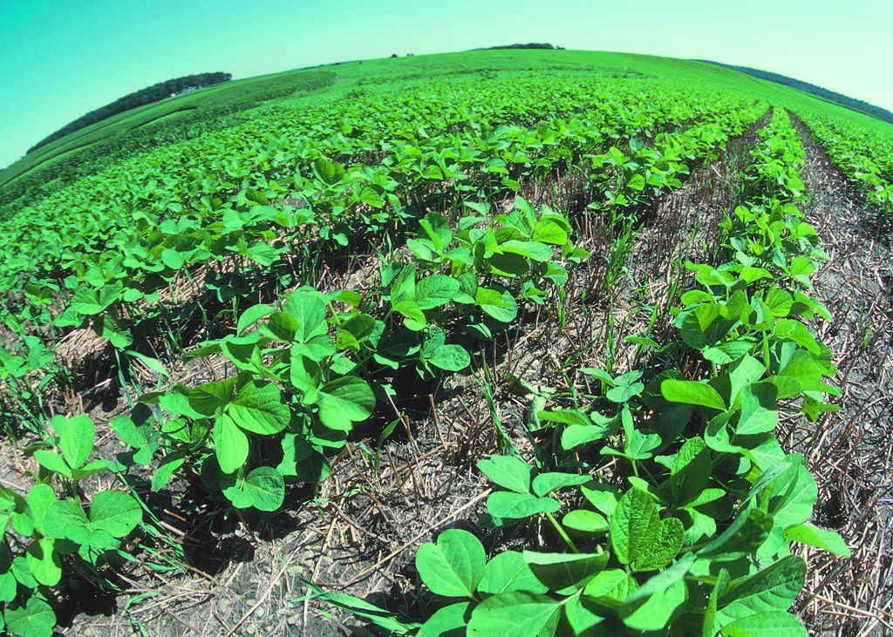
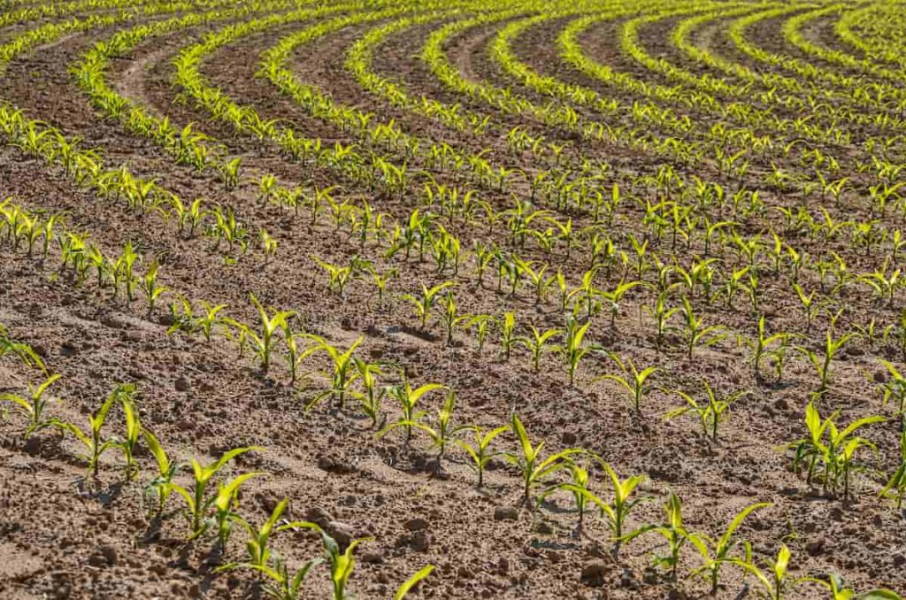
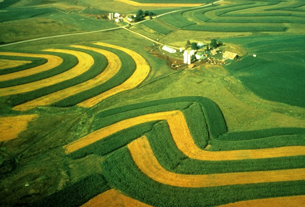
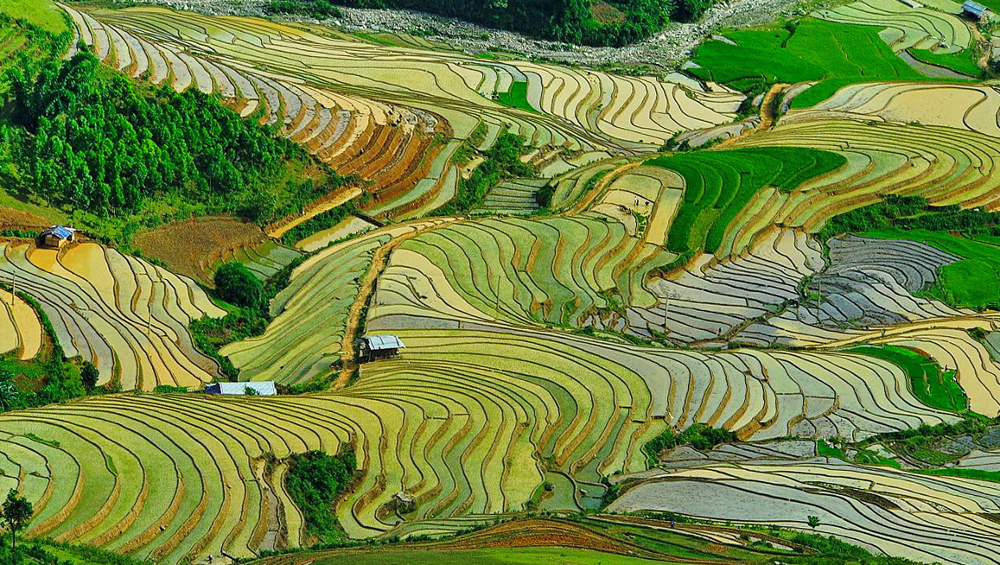

CONSERVATION TILL FARMING
Conservation tillage farming is a sustainable agricultural practice that aims to minimize soil disturbance while maintaining or improving crop productivity. Unlike conventional tillage, which involves intensive plowing and soil inversion, conservation tillage techniques disturb the soil less, leaving crop residues on the surface and minimizing soil erosion.
One of the key benefits of conservation tillage farming is soil conservation. By reducing soil disturbance, conservation tillage helps to protect soil structure, organic matter content, and microbial activity, which are essential for soil fertility and ecosystem health. Furthermore, leaving crop residues on the soil surface provides a protective cover that reduces the impact of rainfall, minimizes surface runoff, and prevents erosion.
Conservation tillage also offers environmental benefits by reducing fuel consumption, greenhouse gas emissions, and soil compaction associated with conventional tillage practices. Moreover, it helps to conserve water resources by improving soil water retention and infiltration rates, making agriculture more resilient to drought conditions.
In addition to soil conservation and environmental benefits, conservation tillage farming can improve farm profitability and sustainability. By reducing input costs associated with tillage equipment, fuel, and labor, farmers can achieve cost savings and increase their economic viability. Furthermore, conservation tillage can enhance crop yields over time by promoting soil health and reducing the risk of erosion-induced yield losses.
Overall, conservation tillage farming is a valuable tool for promoting sustainable agriculture, preserving soil resources, and mitigating the environmental impacts of conventional tillage practices. By adopting conservation tillage techniques, farmers can contribute to the long-term health and resilience of agricultural landscapes while maintaining or improving crop productivity.
CONTOUR FARMING
Contour farming is a sustainable agricultural practice designed to mitigate soil erosion and conserve water by following the natural contours of the land. In contour farming, crops are planted and cultivated along the contour lines of the landscape, rather than up and down slopes. This technique helps to slow down the flow of water across the land, reducing the risk of soil erosion and promoting soil conservation.
One of the key benefits of contour farming is its effectiveness in preventing soil erosion. By planting crops perpendicular to the slope, contour farming creates a series of barriers that intercept and slow down water runoff, allowing it to infiltrate into the soil rather than carrying away valuable topsoil. This helps to reduce soil loss, maintain soil fertility, and protect water quality in nearby water bodies.
Contour farming also helps to conserve water by maximizing the retention of rainfall within the soil. By reducing surface runoff and enhancing soil infiltration rates, contour farming minimizes water loss from erosion and runoff, making more water available for crop growth and reducing the need for irrigation.
Moreover, contour farming can improve crop yields and farm profitability by promoting soil health and reducing the risk of erosion-induced yield losses. By maintaining soil structure, moisture levels, and nutrient availability, contour farming creates favorable growing conditions for crops, leading to healthier plants and higher yields over time.
Overall, contour farming is a valuable tool for promoting sustainable agriculture, preserving soil resources, and mitigating the environmental impacts of soil erosion. By adopting contour farming techniques, farmers can protect their land, enhance crop productivity, and contribute to the long-term health and resilience of agricultural landscapes.
STRIP CROPPING
Strip cropping is an agricultural technique designed to reduce soil erosion, conserve water, and enhance crop productivity by alternating rows of different crops or cover crops across the landscape. In strip cropping, crops are planted in alternating strips or bands along the contour lines of the land, creating a pattern that helps to slow down water runoff and minimize soil loss.
One of the primary benefits of strip cropping is its effectiveness in preventing soil erosion. By planting crops perpendicular to the prevailing wind or slope direction, strip cropping creates a series of barriers that intercept and slow down water and wind, reducing the risk of soil erosion. The alternating strips of crops and cover crops help to stabilize the soil, improve soil structure, and maintain soil fertility, protecting valuable topsoil from being washed or blown away.
Strip cropping also promotes water conservation by maximizing the retention of rainfall within the soil. By reducing surface runoff and enhancing soil infiltration rates, strip cropping minimizes water loss from erosion and runoff, making more water available for crop growth and reducing the need for irrigation. Additionally, strip cropping can improve crop yields and farm profitability by promoting soil health, reducing the risk of erosion-induced yield losses, and providing additional income from cover crops.
Overall, strip cropping is a valuable tool for promoting sustainable agriculture, preserving soil resources, and mitigating the environmental impacts of soil erosion. By adopting strip cropping techniques, farmers can protect their land, enhance crop productivity, and contribute to the long-term health and resilience of agricultural landscapes.
TERRACING
Terracing is a centuries-old agricultural technique that involves constructing a series of level platforms, or terraces, on sloping land to reduce soil erosion, conserve water, and enhance crop productivity. Terracing is particularly useful in areas with hilly or mountainous terrain, where conventional farming practices may result in significant soil loss due to water runoff and erosion.
One of the primary benefits of terracing is its effectiveness in preventing soil erosion. By creating level surfaces on steep slopes, terracing helps to slow down the flow of water across the land, reducing the risk of soil erosion and retaining valuable topsoil. The terraces act as barriers that intercept and retain water, allowing it to infiltrate into the soil rather than carrying away sediment and nutrients.
Terracing also promotes water conservation by maximizing the retention of rainfall within the soil. By reducing surface runoff and enhancing soil infiltration rates, terracing minimizes water loss from erosion and runoff, making more water available for crop growth and reducing the need for irrigation. Additionally, terracing can improve crop yields and farm profitability by providing additional arable land, reducing the risk of erosion-induced yield losses, and creating favorable growing conditions for crops.
Moreover, terracing helps to create more stable and sustainable farming systems by preventing soil degradation, preserving soil fertility, and promoting long-term soil health. By adopting terracing techniques, farmers can protect their land, enhance crop productivity, and contribute to the long-term sustainability of agricultural landscapes.
